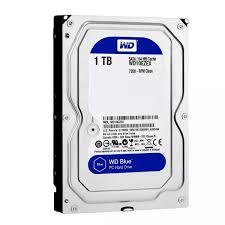

Almacenamiento: Archivos, programas y sistemas operativos. Líneas de producto: WD Blue (uso general), WD Black (rendimiento), WD Red (NAS), WD Purple (vigilancia) y WD Gold (empresarial). Conexión: SATA (HDD/SSD) y NVMe (SSD de alto rendimiento). Rendimiento: HDDs con 5400/7200 RPM; SSDs con alta velocidad NAND Flash. Capacidades: Desde 500 GB hasta más de 20 TB. Durabilidad: Modelos para uso 24/7 en servidores y NAS (WD Red, WD Gold). Software: WD Dashboard y WD Security para gestión y cifrado.
Disco Duro SATA 3.5 1TB 7200RPM Seagate ST1000DM010 Precio: $202.967 + IVA (19%). Disponible en Gestión de Compras Empresariales S.A.S.
Disco Duro Mecánico 2.5" Western Digital BLACK 1TB Precio: $98.400. Disponible en Falabella.
Disco Duro para PC 1TB SEAGATE Precio: $160.115. Disponible en Falabella.
Disco Duro Interno 3TB 7200RPM Toshiba Precio: $349.900. Disponible en Homecenter.